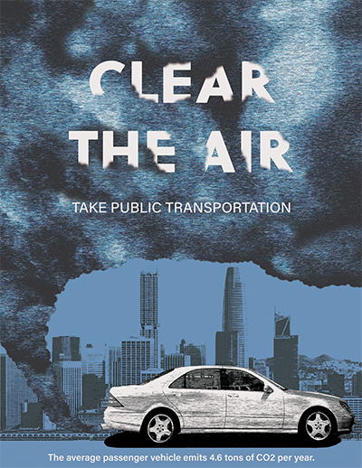

Clear the Air
Course: Visual Communication I, Spring 2023, Poster
“Clear the Air” is an environmental poster that calls for people to take public transportation in order to reduce CO2 emissions. The poster is designed using cool toned colors to express a gloomy feeling with an emphasis on the smoke cloud and the car. It is set in San Francisco to show a city and its high population of people that are victims of large CO2 emissions, especially from transportation.